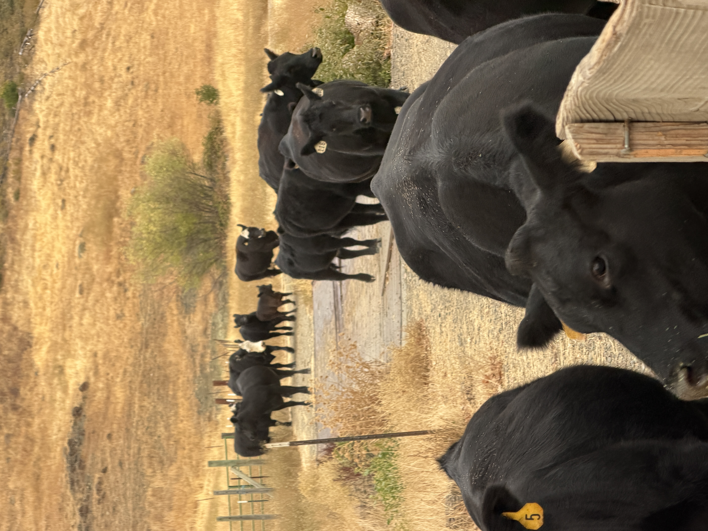

About Us
Middletown Cattle Company is a Northern California ranching operation focused on responsibly raised grass-fed cattle and sustainable land management.
Located in Lake County, California, our cattle are raised on open pasture with a focus on animal health, quality genetics, and responsible stewardship of the land.
Our operation emphasizes natural grazing practices and premium-quality beef production while maintaining the traditions of Western ranching.
